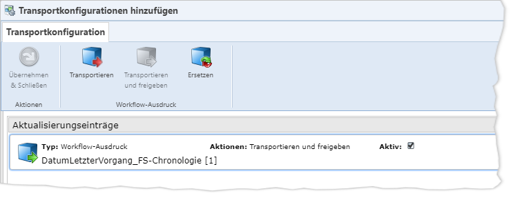

Wenn Sie das „Ausgewählt“-Häkchen eines
Workflow-Artefakts entfernen, werden sowohl dessen Transportvorgaben als auch
dessen Transportkonfiguration verworfen.
Wenn Sie das „Ausgewählt“-Häkchen eines
Workflow-Artefakts entfernen, werden sowohl dessen Transportvorgaben als auch
dessen Transportkonfiguration verworfen.Bei Artefakten der Typen „Workflows“ und „Workflow-Ausdrücke“ können Sie in einer sogenannten „Transportkonfiguration“ festlegen, welche Workflow-Aktualisierungsaktionen beim Installieren des Artefakts in IKAROS ausgeführt werden sollen.
Es handelt sich um eine angepasste Variante des Assistenten für Workflow-Aktualisierungspakete in IKAROS. Ausführliche Informationen dazu finden Sie in der Hilfe von IKAROS im Kapitel mit der ID „fs_b607ff7c1ca1“.

Abb. 21: Dialog zur Transportkonfiguration von Workflow-Artefakten
Beim Auswählen eines Workflows oder Workflow-Ausdrucks als Artefakt wird im Hintergrund automatisch eine Standard-Transportaktion angelegt: Bei Arbeitskopien „Transportieren“, bei freigegebenen Versionen „Transportieren und freigeben“.
Hinweise
Wenn Sie das „Ausgewählt“-Häkchen eines
Workflow-Artefakts entfernen, werden sowohl dessen Transportvorgaben als auch
dessen Transportkonfiguration verworfen.
Für Workflow-Verträge kann keine
Transportkonfiguration definiert werden.
Unterschiede im Vergleich zu IKAROS
Im TRMS bezieht sich der Dialog immer nur auf genau dasjenige Artefakt, für das die Transportkonfiguration geöffnet wurde. Es ist nicht möglich, mehrere Workflows/Workflow-Ausdrücke im selben Dialog zu konfigurieren. Daraus ergeben sich einige Unterschiede im Vergleich zum Assistenten für Workflow-Aktualisierungspakete in IKAROS:
Schaltflächen: Der
Dialog enthält nur Schaltflächen für das aktuelle Artefakt.
Workflows: Im Dialog
zur Konfiguration der Transportaktion „Ersetzen“ ist als
„Einzusetzender Workflow“ fest der aktuelle Workflow eingetragen und die
Einstellung „Zustandszuordnung“ steht fest auf „Alle“.
Workflow-Ausdrücke:
Im Dialog zur Konfiguration der Transportaktion „Ersetzen“ ist als
„Einzusetzender Workflow-Ausdruck“ fest der aktuelle Workflow-Ausdruck
eingetragen.
Schaltflächen
|
Symbol |
Schaltfläche |
Beschreibung |
|
|
„Übernehmen & Schließen“ [Strg] + [H] |
Übernimmt die Transportkonfiguration temporär. Um sie dauerhaft zu speichern, muss der Change bzw. das Change Set gespeichert bzw. das Artefakt/Paket exportiert werden. |
|
|
„Transportieren“ (Workflow-Ausdrücke: [Strg] + [Umschalt] + [C]) (Workflows: [Strg] + [C]) |
Ändert die Transportaktion für den gewählten Workflow/Workflow-Ausdruck auf „Transportieren“. D. h. das Artefakt wird beim späteren Transport in IKAROS nur als Arbeitskopie installiert. Pro Artefakt ist entweder „Transportieren“ oder „Transportieren und freigeben“ möglich. Die jeweils andere Option wird automatisch ersetzt, falls vorhanden. |
|
|
„Transportieren und freigeben“ (Workflow-Ausdrücke: [Strg] + [Umschalt] + [A]) (Workflows: [Strg] + [A])
|
Ändert die Transportaktion für den gewählten Workflow/Workflow-Ausdruck auf „Transportieren und freigeben“. D. h. das Artefakt wird beim späteren Transport in IKAROS installiert und automatisch freigegeben. Pro Artefakt ist entweder „Transportieren“ oder „Transportieren und freigeben“ möglich. Die jeweils andere Option wird automatisch ersetzt, falls vorhanden. |
|
|
„Ersetzen“ (Workflow-Ausdruck: [Strg] + [Alt] + [R]) (Workflows: [Strg] + [Umschalt] + [X]) |
Öffnet den Assistenten, um zu konfigurieren, dass beim Transport im IKAROS-Zielsystem ein anderer Workflow/Workflow-Ausdruck durch den gerade konfigurierten ersetzt wird. Eine Transportkonfiguration kann pro Artefakt mehrere „Ersetzen“-Aktionen enthalten. Die Schaltfläche ist deaktiviert, wenn der Workflow/Workflow-Ausdruck eine Arbeitskopie ist. Informationen zum Ersetzen finden Sie in der Hilfe in IKAROS im Kapitel mit der ID „fs_13f000a4cbaf“ (Workflows) bzw. „fs_f79a16655443“ (Workflow-Ausdrücke). |